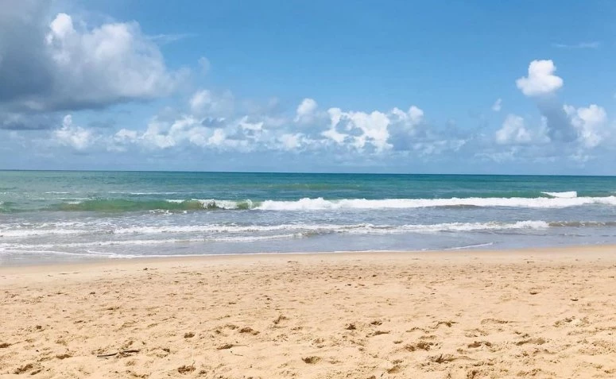
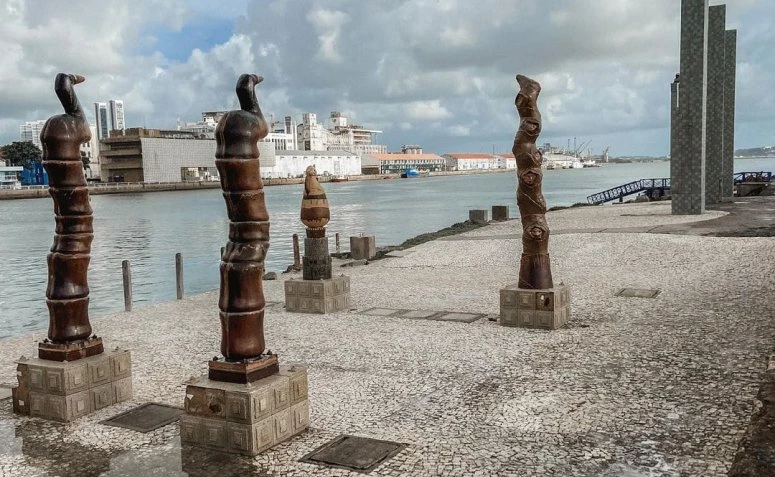
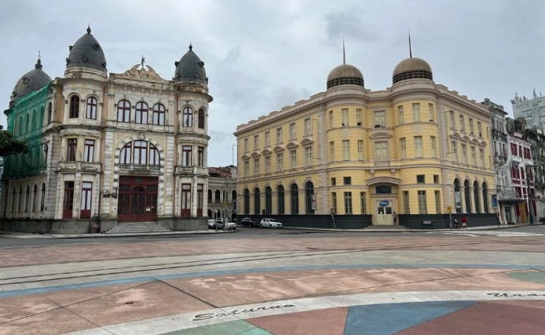
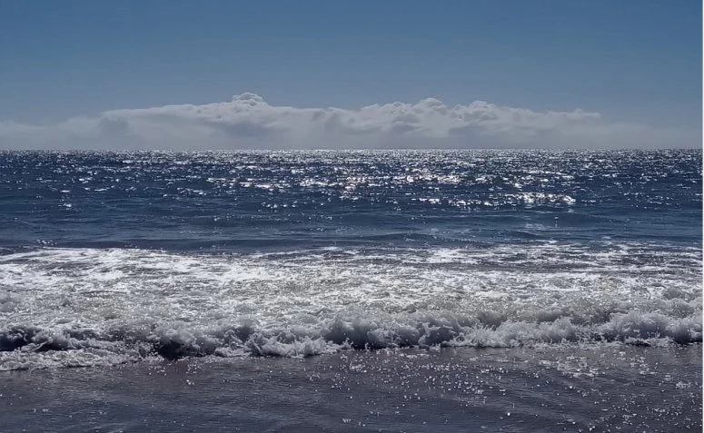
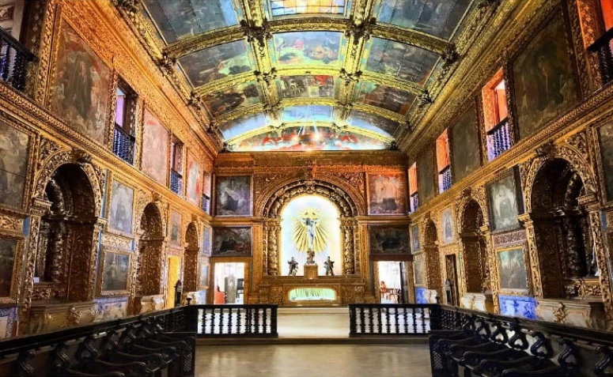

Marco Zero (Recife): um guia pela história e cultura de Pernambuco
Locais
Onde fica Recife
Recife fica situada na região litoral de Pernambuco, a 16 km da cidade de Jaboatão dos Guararapes. O nome do município é derivado da palavra arrecife, que são formações rochosas submersas no mar localizadas próximo à costa e que formam piscinas naturais. É bem simples chegar ao destino, pois a cidade conta com um aeroporto de grande porte, que é o Aeroporto de Guararapes. Saindo do aeroporto, você pode chegar até o seu hotel utilizando o metrô, ônibus ou táxi..
Como circular em Recife
A melhor maneira de transitar pela cidade é utilizar o metrô ou táxi. Mas é preciso tomar alguns cuidados básicos, principalmente se for a sua primeira vez nesse destino. Recife é uma cidade considerada insegura, então é recomendado que você evite levar objetos de valor quando estiver explorando a região. Além disso, não aceite ajuda de guias turísticos desconhecidos que se apresentem para você na rua. Para a sua segurança, é recomendado contratar um profissional que possua boas referências.
O que fazer em Recife:
1. Praia de Boa Viagem

A Praia de Boa Viagem é a mais conhecida e movimentada de Recife, com ondas tranquilas, uma faixa de areia longa e uma grande estrutura para a recepção de turistas. Entretanto, é preciso tomar cuidado, pois essa praia tem incidência de ataques de tubarão. Em alguns pontos da praia existem placas apontando quais locais não são seguros para banho. Além disso, lembre sempre de evitar mergulhar quando a maré estiver alta.
2. Parque das esculturas Francisco Brennand

O Parque das esculturas Francisco Brennand é um museu a céu aberto, construído no ano 2000 em homenagem ao aniversário de 500 anos do Brasil. O parque fica em um dique, próximo à Praça do Marco Zero, e possui mais de 100 peças que contam detalhes da história da capital pernambucana. Os ingressos para conferir a atração custam R$ 30 e o horário de funcionamento é das 8h às 17h durante a semana. Nos sábados, o parque funciona das 7h às 17h e aos domingos, das 10h às 16h.
3. Praça do Rio Branco ou Praça do Marco Zero

A Praça do Rio Branco, conhecida popularmente como Praça do Marco Zero, fica localizada no Recife Antigo à beira do Cais Porto. A praça marca o local onde a cidade de Recife foi fundada e, por esse motivo, tem grande importância histórica. É um dos lugares mais visitados da cidade e um dos mais movimentados durante o carnaval.
4. Praia do Pina

Essa praia fica localizada a menos de 1 km da Praia de Boa Viagem e apresenta uma longa faixa de areia e coqueiros na orla. É uma ótima opção para curtir um dia de sol, mas também é preciso tomar bastante cuidado. Assim como a Praia de Boa Viagem, na Praia do Pina pode ocorrer ataques de tubarão. Por isso, a dica sobre seguir as placas e não nadar quando a maré estiver alta se repete.
5. Igreja da Ordem Terceira de São Francisco

Conhecida como Capela Dourada, esta é uma das mais belas igrejas de Recife. Sua construção foi iniciada em 1696 e ela foi o primeiro templo brasileiro a ter uma decoração totalmente barroca. A igreja tem uma beleza incomparável e é conhecida como Capela Dourada por usar uma grande quantidade de ouro em sua decoração.
Restaurantes e bares em Recife
O que não falta em Recife são bares e restaurantes que contam com um cardápio diversificado e com as principais delícias da culinária regional. Veja a seguir uma seleção com alguns desses lugares para você se inspirar e garantir uma experiência gastronômica maravilhosa: